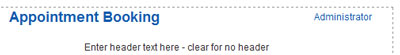
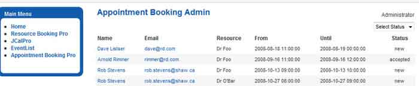

The 'Resource' is what is being booked or reserved.
A resource can be anything you want, a room (meeting room, exercise room, etc), a person (doctor, hair stylist, etc) or an object (computer, golf clubs, Ferrari)
This screen is used to set basic information about the resource such as name, description and cost.
Also here is where you can assign users as resource administrators. A user that has been assigned as an
administrator will, when logged in and viewing the front end booking screen, see an 'Administrator' link.

This link will open a front-end admin screen that will allow them to view and process resource requests. They will only be able to see requests for resources that they are 'Administrator' for.

Cancel: Abort changes and return to the previous screen.
Save: Save changes and return to the previous screen.
Help: Opens this help screen.
Name: A resource must have a name. ex: 'Meeting Rom A' or 'Dr. Allan Harper.'
Description: The description is often just set to the name but can also include more information. This is the field that will be shown in the dropdown list so keep it as short as possible.
Cost: Cost is a free form text field so you can put things like `$10/hr + $20 deposit`. This appears in the resource dropdown list for the customer.
Rate: Rate is used by the PayPal implementation. Rate is the amount you charge as a decimal number. This is used by the system to calculate total charge for PayPal.
Email To: To have notifications for this resource sent to one or more special email addresses, enter them here. Example: foo@bar.com,abc.xyz.com (use comma to separate multiple addresses) If this field is left blank resource requests will be sent to the address specified in the configuration section. The resource level overrides the component level. If you set a notification address at the resource level, the component level is ignored, if you want both you will need to add both at the resource level.
SMS Phone: To have SMS text message notifications sent to this resource enter a cell phone here (only one supported). This feature requires a Clickatell account be setup and configured. See the Configure screen Clickatell tab. If this field is left empty, no SMS messages will be sent to the resource.
SMS notifications are sent, to the resource, on these events :
- New booking
- User cancel from front end
- Booking status change; [status any status] -> accepted, by admin or front-end admin.
- Booking status change; [status any status] -> cancelled, by admin or front-end admin.
Prevent Duplicate Bookings / Max Duplicated:
Prevent Duplicate Bookings = No: means, don't even check, allow any number of duplicates.
Prevent Duplicate Bookings = Yes: means, check for dupes and stop any more than Max Duplicates.
Max Dupe = 0, allow only the first booking
Max Dupe = 1, allow initial booking + one duplicate (2 bookings total)
Max Dupe = 2, allow initial booking + two duplicates (3 bookings total)
etc..
Global = use the duplicate booking setting at the control configuration level.
Default Calendar Category: Enter a default calendar category for this resource. This is only applicable if you are using 'auto-accept' and a 3rd party calendar (JCalPro or JEvents)
Resource Administrators: Select one or more users to be administrators for this resource. When a resource administrator accesses the front-end control they see only requests for their resources. A user can administer one or many resources and a resource can have one or many administrators.
Time Slots: Global = use 'Global' time slots Resource specific = this resource has it's own time slots defined. Use the Time Slots screen to set time slots.
Allow Booking on Days: Un-check any days you wish to be disabled on the popup calendar.
Non-work day message: For days not chceked above, you can display an optional message in the GAD grid for that day. <br>Example:"-- not available --" or "*** My Day Off ;-) ***"
Minimum lead time**: Enter the minimum number of hours a person can book ahead. This was added for sites allowing 'current day' booking.
Example: set to 1 = someone can book an appointment for 1 hour from now, set to 24 and attempts to book appointments less than 24 hours from now will be blocked.
Normal setting is '0' with Disable Dates Before set to 'Tomorrow' means a visitor can book anytime tomorrow.
Disable Dates Before**: Dates to disable on user's popup calendar.
Disable Dates After**: Dates to disable on user's popup calendar.
You can use the above two settings when you want to allow bookings on ONLY certain dates, ex: appointments during a 3 day event. Disable dates before and after the event so users can only book appointments during the event.
Leave as 'Tomorrow' and 'Not Set' for day to day appointment booking on an on-going basis.
Display Order: Enter a number to indicate what order this resource should appear in the dropdown list.
Published: Only resources with Published set to Yes will appear in the dropdown list on the Booking screen
** These settings do not change the Graphic Availability Display (GAD) booking screen grid but do effect the validation. That means a user may see a timeslot that shows as available but when they try to book it the validation may tell them there is not enough lead time.